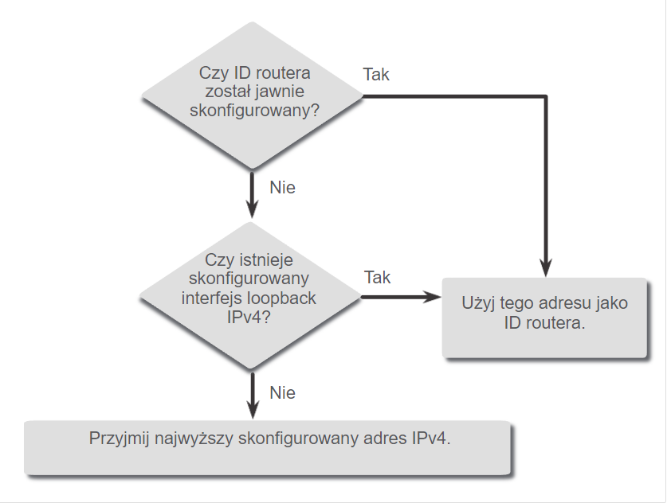
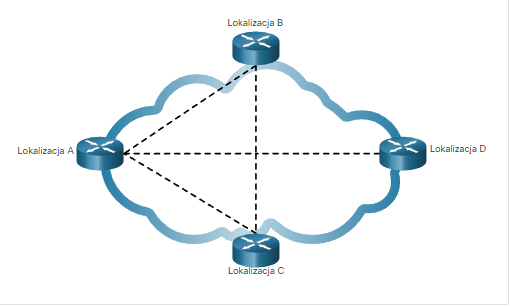

OSPF to protok贸 routingu stanu cza opracowany jako alternatywa dla RIP. Wykorzystuje on koncepcje obszar贸w.
Komunikaty OSPF s wykorzystywane do tworzenia i utrzymywanie trzech nastpujcych baz danych OSPF:
Baza przylegoci (Adjacency database) - Tworzy tablic ssiad贸w. - show ip ospf neighbor
Baza stanu cza (Link-state database - LSDB) - To tworzy tablic topologii. show ip ospf database
Baza przekazywania (Forwarding database) - To tworzy tablic routingu. show ip route
Router używajcy OSPF buduje tablic topologii przy użyciu oblicze opartych na algorytmie Dijkstry pierwszej najkr贸tszej cieżki (shortest-path first - SPF).
W tym celu algorytm SPF tworzy tzw. drzewo SPF, każdy router umieszczany jest w korzeniu drzewa, po czym obliczana jest najkr贸tsza cieżka do każdego wza. Nastpnie na podstawie utworzonego drzewa SPF obliczana jest najlepsza cieżka. Ostatecznie OSPF wstawia najlepsze cieżki do tablicy przekazywania, na podstawie kt贸rej tworzona jest tablica routingu.
2. Proces routingu stanu cza
Ustanowienie przylegoci ssiad贸w - wysyanie pakiet贸w Hello, aby ustali czy na danym czu znajduj si ssiedzi.
Wymiana komunikat贸w o stanie cza (LSA) - pakiety LSA zawierajce informacje na temat stanu oraz kosztu każdego bezporednio podczonego cza wysyane s zalewowo do wszystkich ssiad贸w.
Tworzenie bazy stan贸w cza - Na podstawie pakiet贸w LSA Routery tworz tablic topologii (LSDB).
Wyb贸r najlepszej trasy - najlepsze cieżki oferowane s do tablicy routingu IP.
3. OSPF wieloobszarowy zalety:
Mniejsze tablice routingu
Zmniejszony narzut aktualizacji stanu cza
Zmniejszona czstotliwo oblicze SPF
Zmiany stanu cza dotycz tylko bieżcego obszaru
4. OSFPv3
To odpowiednik OSPFv2 sużacy do wymiany prefiks贸w IPv6.
5. Rodzaje pakiet贸w OSPF
Rodzaje pakiet贸w OSPF
DR - Designed Router; BDR - Backup Designed Router
6. Stany protokou OSPF:
Stany protokou OSPF
II. Konfiguracja jednoobszarowego OSPFv2
1. Identyfikator routera
To warto 32-bitowa, kt贸ra suży do jednoznacznej identyfikacji routera. Identyfikator ten suży do wykonywania nastpujcych czynnoci:
Uczestniczenie w synchronizacji baz danych OSPF - Podcas stanu Exchange, router z najwyższym identyfikatorrem routera jako pierwszy wyle pakiety opisu bazy danych (DBD).
Uczestniczenie w wyborze routera desygnowanego (DR) - router z najwyższym id jest DR, drugi najwyższy BDR.
2. Maska blankietowa (wildcard mask)
To odwrotno maski podsieci. (255.255.255.0 = 0.0.0.255).
Proces przypisywania identyfikatora
3. Interfejsy pasywne
Domylnie komunikaty OSPF wysyane s przez wszystkie interfejsy doczone do protokou OSPF. Jednak w praktyce powinny one by wysyane tylko na tych interfejsach, na kt贸rych jest poczenie z innym routerami z uruchomionym OSPF.
Wysyanie niepotrzebnych komunikat贸w może wpywa na dziaanie sieci na trzy sposoby:
Nieefektywne wykorzystanie pasma
Nieefektywne wykorzystanie zasob贸w
Zwikszone ryzyko bezpieczestwa
4. DROTHER
Routery, kt贸re nie s ani DR ani BDR.
5. Potrzebne komendy:
router ospf process-id - wczenie OSPFv2.
router-id - ustawienie identyfikatora routera.
clear ip ospf process - wyczyszczenie procesu OSPF (w tym reset relacji przylegania).
show ip protocols - daje możliwo zobaczenia identyfikatora routera oraz pasywnych interfejs贸w.
network network-address wildcard-mask area area-id - wczenie protokou OSPF na interfejsach.
ip ospf process-id area area-id - pozwala na konfiguracje OSPf bezporednio na interfejsie zamiast polecenia network.
passive-interface - ogranicza wysyanie komunikat贸w dotyczcych routingu przez interfejs. Komenda passive-interface default sprawia, że wszystkie interfejsy staj si pasywne.
show ip ospf interface - wywietla DR i BDR na interfejsie, rol routera, bieżcy koszt.
ip ospf network point-to-point - zmienia typ wyznaczonej sieci na punkt-punkt i wycza proces wyboru DR/BDR.
ip ospf priority value - ustawia priorytet interfejsu (od 0 do 255).
auto-cost reference-bandwidth Mbps - zmienia referencyjn szerokoc pasma (co pozwala na zmian kosztu dla interfejs贸w szybszych niż Fast Ethernet).
ip ospf cost value - zmienia warto kosztu ogaszan przez lokalny router OSPF do innych router贸w OSPF .
ip ospf hello-interval seconds - zmienia interwa hello.
ip ospf dead-interval seconds - zmienia interwa dead.
default-information originate - nakazuje routerowi by 藕r贸dem informacji o trasie domylnej i propagowanie statycznej trasy domylnej w aktualizacjach OSPF.
show ip interface brief - sprawdza, czy żdane interfejsy s aktywne z poprawnym adresowaniem IP.
show ip route - sprawdza, czy tablica routingu zawiera wszystkie oczekiwane trasy.
6. Koszt jako metryka w OSPF
Protokoy routingu używaj metryki w celu wyznaczenia najlepszej trasy dla pakietu przez sie. Metryka jest miar nakadu wymaganego do przesania pakietu przez dany interfejs.
Protok贸 OSPF używa jako metryki kosztu cieżki. Im niższy koszt, tym lepsza trasa do celu.
Koszt = referencyjna szeroko pasma / szeroko pasma interfejsu
Warto kosztu OSPF musi by liczb cakowit.
Domylne koszty OSPF na urzdzeniach CiscoKoszt OSPF przy referencyjnej szerokoci pasma dostosowanej do obsugi czy 10 Gigabit Ethernet
7. Interway pakiet贸w Hello
Pakiety OSPFv2 Hello s wysyane co 10 sekund.
Interwa Dead to okres, przez jaki router bdzie czeka na odbi贸r pakietu Hello, zanim zadeklaruje, że ssiad jest wyczony. (W Cisco domylnie jest to 4-krotno interwau Hello, czyli 10 sek).
8. Propagowanie domylnej trasy statycznej w OPSFv2
Router brzegowy (router bramy) - to router podczony do Internetu, kt贸ry powinien propagowa domyln tras do innych router贸w w lokalnej sieci.
Router brzegowy systemu autonomicznego (Autonomous System Boundary Router, ASBR) - router, kt贸ry znajduj si pomidzy domen routingu OSPF a sieci bez OSPF.
III. Koncepcje bezpieczestwa sieci
Pojcia bezpieczestwa
1. Wektory atak贸w sieciowych
Wekor ataku - to cieżka, dzii kt贸rej podmiot zagrożenia może uzyska dostp do serwera, hosta lub sieci. Wektory mog pochodzi ze zewntrz lub wewnrz.
2. Typy haker贸w
Typy haker贸w
3. Terminy dotyczce hackingu
Terminu dotyczce hackingu
4. Narzdzia do testowania penetracji
Narzdzia do testowania penetracji
5. Typy atak贸w
Typy atak贸w
VII. Koncepcje sieci WAN
1. Topologie WAN
Punkt-punkt
Hub-and-spoke - umożliwia wsp贸użytkowanie pojedynczego interfejsu na routerze centralnym (hub) przez wszystkie routery obwodowe (spoke).
Hub-and-spoke
Dual-homed - zapewnia redundancj. Router centralny jest podwojony w lokalizacji a te nadmiarowo podczone do router贸w obwodowych w chmurze WAN.
Dual-homed
Penej siatki - wykorzystuje wiele obwod贸w wirtualnych do czenia wszystkich lokalizacji.
Topologia penej siatki
Czciowej siatki - czy wiele, ale nie wszystkie lokalizacje.
Topologia czciowej siatki
2. cza operator贸w
SLA - umowa o poziomie usug podpisywana midzy organizacj a usugodawc. Przedstawia ona oczekiwane usugi zwizane z niezawodnoci i dostpnoci poczenia.
3. Standardy sieci WAN
Nowoczesne standardy sieci WAN s definiowane i zarzdzane przez wiele uznanych organ贸w, w tym:
TIA/EIA - Telecommunications Industry Association and Electronic Industries Alliance
ISO - International Organization for Standardization
IEEE - Institute of Electrical and Electronics Engineers
4. Sieci WAN w modelu OSI
Sieci WAN w modelu OSI
5. Terminologia WAN
Terminologia WAN
6. Urzdzenia sieci WAN
Urzdzenia sieci WAN
7. Komunikacja szeregowa
W sieciach WAN stosowana jest komunikacja szeregowa.
8. Komunikacja z komutacj czy
Sie z komutacj czy ustanawia dedykowany obw贸d (lub kana) midzy punktami koowymi, zanim użytkownicy bd mogli si komunikowa.
Podczas transmisji w sieci z komutacj czy caa komunikacja korzysta z tej samej cieżki. Caa staa pojemno przydzielona do obwodu jest dostpna na czas poczenia, niezależnie od tego, czy s informacje do transmisji, czy nie. Może to prowadzi do nieefektywnoci w użyciu obwodu. Z tego powodu komutacja czy zasadniczo nie nadaje si do przesyania danych.
Dwa najpopularniejsze typy technologii WAN z komutacj czy to publiczna komutowana sie telefoniczna (PSTN) i sie cyfrowa z integracj usug (ISDN).
9. Komunikacja z przeczaniem pakiet贸w
W przeciwiestwie do komutacji czy, przeczanie pakiet贸w dzieli dane ruchu na pakiety, kt贸re s kierowane w sieci wsp贸użytkowanej. Przeczanie pakiet贸w, nie wymaga zestawienia specjalnego obwodu/poczenia, ponadto pozwalaj kilku urzdzeniom komunikowa si za pomoc tego samego kanau.
Typowe rodzaje technologii WAN z przeczaniem pakiet贸w to Ethernet WAN (Metro Ethernet), Multiprotocol Label Switching (MPLS), a także starszy Frame Relay i starszy Asynchronous Transfer Mode (ATM).
10. SDH, SONET i DWDM
Istniej dwa optyczne standardy warstwy 1 OSI dostpne dla dostawc贸w usug:
Synchronous Digital Hierarchy (SDH) to globalny standard transportu danych za pomoc kabla wiatowodowego.
Synchronous Optical Networking (SONET) to norma p贸nocnoamerykaska, kt贸ra wiadczy te same usugi co SDH.
Dense Wavelength Division Multiplexing (DWDM) to nowsza technologia, kt贸ra zwiksza nono danych SDH i SONET poprzez jednoczesne wysyanie wielu strumieni danych (multipleksowanie) przy użyciu r贸偶nych dugoci fal wiata, jak pokazano na rysunku.
11. MPLS
Multiprotocol Label Switching (MPLS) to wysokowydajna technologia routingu WAN dla dostawcy usug umożliwiajca czenie klient贸w bez wzgldu na metod dostpu lub typ obciżenia. MPLS obsuguje r贸偶ne metody dostpu klienta (np. Ethernet, DSL, Cable, Frame Relay). MPLS może enkapsulowa ruch wszystkich typy protoko贸w, w tym IPv4 i IPv6.